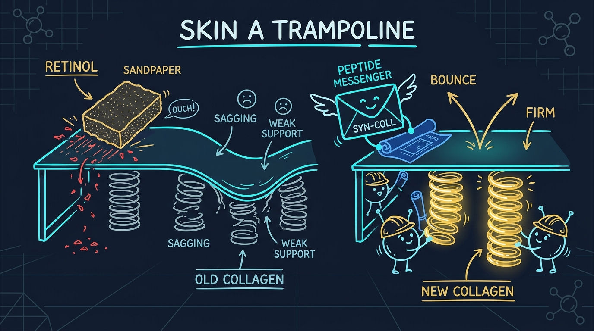

Das Haut-Trampolin & die Feder-Bauer
Vergleich zwischen Zerstörung der Oberflächenbarriere und gezielter zellulärer Peptid-Signalübertragung.

Jeder wünscht sich glatte, straffe Haut. Seit fünfzig Jahren empfehlen Ärzte Patienten Retinol (Vitamin A), um Falten vorzubeugen.
Dennoch brechen über 40% der Anwender die Retinol-Behandlung innerhalb von drei Wochen ab. Warum hören sie auf? Weil Retinol starkes Brennen, rote Flecken und schuppende Hautstellen verursacht. Dermatologen bezeichnen dies als Retinoid-Dermatitis.
Heute bietet ein patentiertes Schweizer Peptid namens Syn-Coll® (Palmitoyl Tripeptide-5) eine saubere Alternative. Diese Studie erklärt, wie beide Wirkstoffe arbeiten und warum Peptide die Haut nicht reizen.
1. Die Trampolin-Analogie: Wie die Haut elastisch bleibt
Stellen Sie sich Ihre Haut wie ein großes Trampolin vor.
Das Sprungtuch, auf dem Sie hüpfen, ist die äußere Hautschicht (die Epidermis). Unter diesem Sprungtuch sind hunderte spiralförmige Stahlfedern befestigt. In Ihrer Haut bestehen diese stabilen Stahlfedern aus einem kraftvollen Protein namens Kollagen.
In jungen Jahren besitzt die Haut tausende elastische, straffe Federn. Mit zunehmendem Alter und UV-Einstrahlung ermüden diese Federn. Sie leiern aus und reißen. Wenn die Federn darunter nachgeben, sackt das Sprungtuch ein und bildet eine sichtbare Falte.
2. Der aggressive Ansatz: Schmirgelpapier (Retinol)
Retinol versucht, das Trampolin von oben nach unten zu reparieren.
Retinol wirkt auf dem Sprungtuch wie grobes Schleifpapier. Es schabt die schützende Außenschicht der Haut ab. Dadurch gerät die Haut in einen Schockzustand, der die Zellabstoßung gewaltsam beschleunigt.
Diese Schmirgelpapier-Methode bringt gravierende Probleme mit sich:
- Zerstörte Feuchtigkeitsbarriere: Wasser verdampft unkontrolliert, was zu extremer Trockenheit führt.
- Schuppung und Ablösung: Abgestorbene Haut löst sich in sichtbaren Schuppen ab.
- Hohe Lichtempfindlichkeit: Da die Schutzschicht ausgedünnt wird, verbrennt die Haut bei normalem Tageslicht extrem schnell.
3. Der intelligente Ansatz: Eine Nachricht senden (Syn-Coll®)
Anstatt die Oberfläche abzuschleifen, wirkt Syn-Coll® direkt von unten.
Syn-Coll® ist eine mikroskopische Peptidkette (Palmitoyl Tripeptide-5). Peptide sind winzige biochemische Botenstoffe. Sie funktionieren wie Kurznachrichten, die zwischen Hautzellen verschickt werden.
In der menschlichen Haut arbeitet ein natürliches Protein namens TGF-beta wie ein Bauleiter. Wenn der Bauleiter in die Pfeife bläst, beginnen die Aufbauzellen (Fibroblasten) mit dem Weben neuer Kollagenfedern. Syn-Coll® imitiert exakt dieses Pfeifsignal des Vorarbeiters.
Sobald Syn-Coll® die Aufbauzellen berührt:
- Aktiviert es die natürliche Produktion von Typ-I- und Typ-III-Kollagen.
- Blockiert es Enzyme, die vorhandenes Kollagen abbauen.
- Bleibt die schützende äußere Hautbarriere vollkommen unversehrt und gesund.
Retinol-Weg
- 1. Schabt die äußere Lipidschutzschicht aggressiv ab.
- 2. Löst Entzündungen, Rötungen und Schuppenbildung aus.
- 3. Verzögerter Kollagenanstieg von +120% bis +200%.
Syn-Coll® Peptid-Weg
- 1. Dringt sanft ohne jegliche Reizung durch die Barriere.
- 2. Aktiviert das zelluläre TGF-beta Kollagensignal.
- 3. Webt +354% neue elastische Kollagenfedern.
4. Klinischer Direktvergleich
| Klinisches Kriterium | Syn-Coll® (Palmitoyl Tripeptide-5) | Standard-Retinol (0,5% – 1,0%) |
|---|---|---|
| Kollagen-Stimulation | +354% Steigerung (Klinische Studie) | +120% bis +200% Steigerung |
| Hautbarriere-Belastung | Null Schädigung (Erhält Lipidschicht) | Hohes Risiko (Führt zu Schuppung & Rötung) |
| Lichtempfindlichkeit | Keine (Sicher für Tagesanwendung) | Hoch (Erfordert strikten Sonnenschutz) |
| Dauer bis zu Resultaten | Sichtbare Aufpolsterung in 14–28 Tagen | 8–12 Wochen (Erfordert Eingewöhnungsphase) |
5. Klinische Studienergebnisse: Echte Resultate am Menschen
Wissenschaftler untersuchten Syn-Coll® an 60 freiwilligen Probanden über einen Zeitraum von 84 Tagen. Die Teilnehmer trugen zweimal täglich eine 2,5%ige Konzentration auf.
Die klinischen Messergebnisse belegten zwei entscheidende Erkenntnisse:
- 84% Reduktion der Faltenoberfläche: Tiefe Linien wurden sichtbar geglättet, da frische Kollagenfedern die Haut von unten anhoben.
- Keine Hautausdünnung: Biopsiemessungen bestätigten, dass die schützende Hornschicht der Haut dick, stark und vollkommen intakt blieb.
6. Häufig Gestellte Fragen
Syn-Coll nutzt gezielte Peptid-Signalübertragung, um direkt mit den kollagenbildenden Zellen (Fibroblasten) zu kommunizieren. Es aktiviert die natürliche Kollagenproduktion von innen heraus, ohne die schützende Lipidschicht der Haut abzutragen.
Ja. Im Gegensatz zu Retinol, das im Sonnenlicht zerfällt und die Haut extrem lichtempfindlich macht, verursacht Syn-Coll keine Fotosensibilität. Es kann morgens und abends völlig sicher aufgetragen werden.
Erleben Sie Schweizer Syn-Coll® Peptidtechnologie
Formuliert in Kollagen Intensiv™ mit patentierten Schweizer Peptiden und einer risikofreien 90-Tage-Geld-zurück-Garantie.
Offiziellen Kollagen Intensiv Shop Besuchen